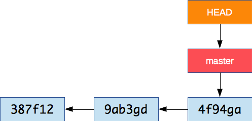
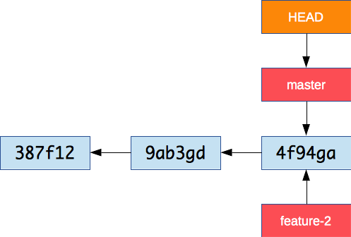
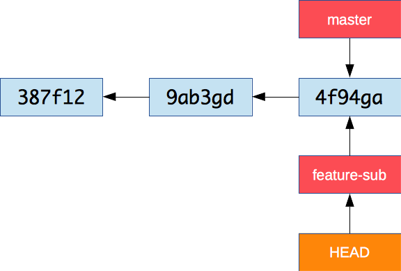
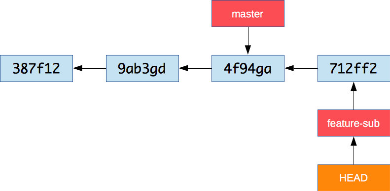

# Git Branching <!-- START doctoc generated TOC please keep comment here to allow auto update --> <!-- DON'T EDIT THIS SECTION, INSTEAD RE-RUN doctoc TO UPDATE --> - [What is branching?](#what-is-branching) - [Exercise](#exercise) - [Working with branches](#working-with-branches) - [What is a branch?](#what-is-a-branch) - [Creating a new branch](#creating-a-new-branch) - [Switching branches](#switching-branches) - [Commit on a branch](#commit-on-a-branch) <!-- END doctoc generated TOC please keep comment here to allow auto update --> --- ## What is branching? > Branching means you diverge from the main line of development and continue to do work without messing with that main line. <p class='center'><img src='images/commits.png' width='45%' /></p> Git has a very powerful branching model: * Git branches are incredibly **lightweight**. * Branching operations are nearly **instantaneous**. * Switching between branches is generally just as **fast**. Git encourages workflows that branch and merge often. --- ### Exercise We will use this repository to illustrate branching: ```bash $> cd /path/to/projects $> git clone https://github.com/MediaComem/comem-webdev-git-branching-ex.git $> cd comem-webdev-git-branching-exercise ``` Open the project with your favorite editor and open its `index.html` page in a browser. --- ## Working with branches Remember that Git stores data as a series of snapshots. <img src='images/snapshots.png' width='45%' /> Each **commit** contains a pointer to the snapshot of the content you staged, the author's user name and e-mail, and also a pointer to the previous commit. --- ### What is a branch? A branch is simply a lightweight, movable pointer to a commit.  The default branch is **master**. The special **HEAD** pointer indicates the current branch. As you start making commits, the current branch pointer **automatically moves** forward to your latest commit. --- #### Showing branches on the command line The `git log` command can show you a representation of the commit graph and its branches: ```bash $> git log --oneline --decorate --graph --all * 4f94ga (HEAD -> master) Improve layout * 9ab3gd Fix addition * 387f12 First version ``` In fact, this command is so useful you should make an alias: ```bash $> git config --global alias.graph "log --oneline --graph --decorate --all" $> git graph * 4f94ga (HEAD -> master) Improve layout * 9ab3gd Fix addition * 387f12 First version ``` You can also use `git branch` to simply see the list of branches and which one you are currently on: ```bash $> git branch * master ``` --- #### Why use branches? Many teams using Git create a separate branch to develop each feature. This has many advantages: * Each developer can work on his own feature, **isolated** from changes going on elsewhere. * They can pull in changes from the mainline **at their own pace**. * The team can choose **which features to release** and when. --- ### Creating a new branch > **Exercise:** Our JavaScript calculator is missing some code. > Let's create a branch to implement subtraction. It's very fast and simple to create a new branch: ```bash $> git branch feature-2 ```  There is now a new pointer to the current commit. Note that **HEAD** didn't move – we are still on the **master** branch. --- ### Switching branches Now let's switch branches: ```bash $> git checkout feature-2 Switched to branch 'feature-2' ```  This moves `HEAD` to point to the `feature-2` branch. --- ### Commit on a branch As you commit, the current branch (the one pointed to by **HEAD**), moves forward to the new commit. ```bash $> git add subtract.js $> git commit -m "Implement subtraction" ``` 